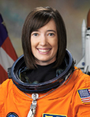

Lyndon B. Johnson Space Center
Houston, Texas 77058
|
National Aeronautics and Space Administration Lyndon B. Johnson Space Center Houston, Texas 77058 |
 |
Biographical Data |
||
K. MEGAN MCARTHUR (PH.D.)
NASA Astronaut
PERSONAL DATA: Born in 1971 in Honolulu, Hawaii. Considers California to be her home state. Married with one child, parents Don & Kit McArthur, reside in San Jose, California. Enjoys activities such as SCUBA diving, backpacking, and cooking.
EDUCATION: Graduated from St. Francis High School, Mountain View, California, 1989; Bachelor of Science in Aerospace Engineering from University of California, Los Angeles, 1993; Ph.D. in Oceanography from University of California, San Diego, 2002.
EXPERIENCE: At the Scripps Institution of Oceanography, McArthur conducted graduate research in nearshore underwater acoustic propagation and digital signal processing. Her research focused on determining geoacoustic models to describe very shallow water waveguides using measured transmission loss data in a genetic algorithm inversion technique. She served as Chief Scientist during at-sea data collection operations, and has planned and led diving operations during sea-floor instrument deployments and sediment-sample collections. While at Scripps, she participated in a range of in-water instrument testing, deployment, maintenance and recovery, and collection of marine plants, animals, and sediment. During this time, McArthur also volunteered at the Birch Aquarium at Scripps, conducting educational demonstrations for the public from inside a 70,000 gallon exhibit tank of the California Kelp Forest.
NASA EXPERIENCE: Selected as a mission specialist by NASA in July 2000, McArthur reported for training in August 2000. Following the completion of two years of training and evaluation, she was assigned to the Astronaut Office Shuttle Operations Branch working technical issues on shuttle systems in the Shuttle Avionics Integration Laboratory (SAIL). McArthur then served as the Crew Support Astronaut for the Expedition 9 Crew during their six-month mission aboard the International Space Station. She also worked in the Space Station and Space Shuttle Mission Control Centers as a Capsule Communicator (CAPCOM). McArthur served aboard STS-125, the final Space Shuttle mission to the Hubble Space Telescope. The mission successfully extended and improved the observatory’s capabilities through 2014. In completing her first space mission, McArthur has logged almost 13 days in space.
SPACE FLIGHT EXPERIENCE: STS-125 Atlantis (May 11-24, 2009) was the fifth and final Hubble servicing mission. The 19 year old telescope spent six days in the Shuttle’s cargo bay undergoing an overhaul conducted by four spacewalkers over five daily spacewalks, with the assistance of crewmates inside the Atlantis. The space walkers overcame frozen bolts, stripped screws, and stuck handrails. The refurbished Hubble Telescope now has four new or rejuvenated scientific instruments, new batteries, new gyroscopes, and a new computer. The STS-125 mission was accomplished in 12 days, 21 hours, 37 minutes and 09 seconds, traveling 5,276,000 miles in 197 Earth orbits.
NOVEMBER 2014